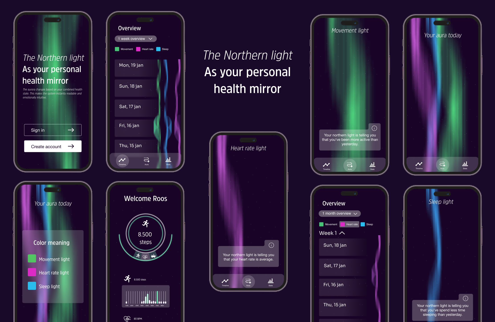

AURORA
Archytecture is een fictief architectenbureau dat zich richt op het ontwerpen van moderne, duurzame en karaktervolle ruimtes en huizen. Voor deze opdracht heb ik een website ontworpen waarin de architectuur en projecten van het bureau op een rustige en visuele manier centraal staan. In plaats van veel tekst en technische informatie ligt de nadruk op grote beelden, heldere typografie en een minimalistische uitstraling. Het doel van de website is om bezoekers de visie en ontwerpstijl van Archytecture te laten ervaren en hen op een toegankelijke manier kennis te laten maken met het bureau en zijn projecten.


De visualisatie reageert op drie verschillende soorten gezondheidsdata: slaap, beweging en hartslag.
De kleuren van het noorderlicht zijn gebaseerd op intuïtieve associaties:
Groen — beweging en vitaliteit
Blauw — rust en slaap
Roze — hartslag, reflectie en het hart
VISUELE IDENTITEIT
Om een samenhangende gebruikerservaring te creëren, zijn vaste ontwerpregels gebruikt voor kleuren, typografie, marges en interactieve elementen. Veelgebruikte onderdelen zijn als componenten opgebouwd in Figma. Hierdoor konden elementen op verschillende pagina’s opnieuw worden gebruikt zonder dat de visuele stijl verloren ging.